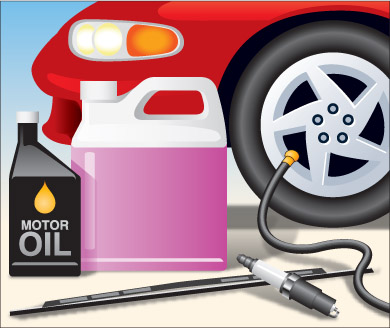
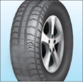

It is illegal to drive a vehicle in dangerous condition. But maintaining your vehicle also makes sense from an economic point of view: it can mean better gas mileage and a better price when you sell it. Maintaining your vehicle also helps to protect the environment.
A police officer or Ministry of Transportation inspector can examine your vehicle, its equipment and any trailer attached to it, at any time. If the vehicle is found to be unsafe, it may be taken off the road until the problem is fixed.
The following driver habits and regular maintenance will help keep your vehicle fit and safe.
Driver Habits

Diagram 5-1
Driver habits are the things that you can do whenever you drive a vehicle. If you identify any concerns or deficiencies, further investigation or actions, including inspection and repair by a qualified mechanic, should be considered. The vehicle’s owner manual often has detailed information on what to look for when inspecting your vehicle and how to address minor problems.
When approaching your vehicle look for signs of:
- Fresh damage
- Fluid leaks underneath
- Under-inflated or flat tires
- Ajar doors, hood, trunk and fuel door/cap
- Unsecured loads
- Check for ice, snow, or dirt that may interfere with vehicle lighting, steering, driver visibility, or become a hazard to other motorists should it come free from your vehicle
From the driver’s seat and before driving, look for:
- Unobstructed visibility around entire vehicle
- Burned-out or dim headlamps
- Illuminated dashboard warning lights during engine start, then going out
- Loose objects in the vehicle
While driving, be alert for:
- Unusual engine or exhaust noises
- Squeaking or grinding noises when applying the brakes
- Dashboard warning lights coming on
When planning an extended trip, perform more detailed checks, including:
- Windshield wipers and washer-fluid level
- Tire pressures, condition and wear
- All lights work
- Under the hood when the engine is cold; oil and coolant levels, obvious defects with belts, hoses, and possible leaks. Using the vehicle owner’s manual for more information on what to look for
- Having your vehicle thoroughly inspected by a qualified mechanic
Regular Maintenance
In order to keep your vehicle running smoothly, vehicle manufacturers often establish a schedule for regular maintenance. Scheduling of this work is normally based upon accumulated vehicle mileage or time intervals (whichever comes first). Further details may be found in the vehicle’s owner’s manual. Regular maintenance may include oil and filter change, other fluid checks and changes, air and fuel filter replacement, tire rotation and brake inspection. Periodically, more intensive mechanical servicing such as engine adjustments and timing-belt replacement may be required.
Winter maintenance
A well-maintained vehicle will usually start in all weather conditions.
Carry emergency supplies. These should include:
- a shovel
- booster cables
- emergency flares or warning lights
- a blanket
- a chain for towing.
Always carry extra windshield washer fluid in the winter and refill the container when necessary.
Faulty exhaust systems are especially dangerous in the winter when drivers are more likely to drive with windows and vents closed. Have your exhaust checked if it sounds noisy or rattles.
Tires

Diagram 5-2
The type of tires you have and the way they are made are critical for good traction, mileage and safety. Keep these points in mind when you buy or replace tires, and check your vehicle owner’s manual or the tire manufacturer’s guide for recommendations.
Tires must meet standards described in the Canadian Motor Vehicle Safety Act. Tires deteriorate with age, even when not in use. Aged tires have reduced traction, are more prone to cracking and may fail unexpectedly while in use. Tires should not be older than 10 years.
- Replace tires when the tread is less than 1.5 millimetres deep or when tread-wear indicators touch the road. Vehicles that weigh more than 4,500 kilograms must replace their front tires when tread is less than three millimetres deep.
- Replace tires that have bumps, bulges, knots, exposed cords or tread and sidewall cuts deep enough to expose cords.
- Any tire on a vehicle must not be smaller than the vehicle manufacturer’s specified minimum size. And it must not be so large that it touches the vehicle or affects its safe operation.
- You should use similar tires on all four wheels of your vehicle.
- To provide the best traction during the winter season, it is recommended that your vehicle be equipped with four winter or all-weather tires with the same tread pattern.
- If you live in northern Ontario, you can legally use studded tires on your vehicle.
- Scrap tires are a serious environmental concern. Proper maintenance will extend the life of a tire and delay its disposal. Some tips for longer wear: maintain the right air pressure; inspect tires for wear; rotate tires regularly and practice good driving habits.